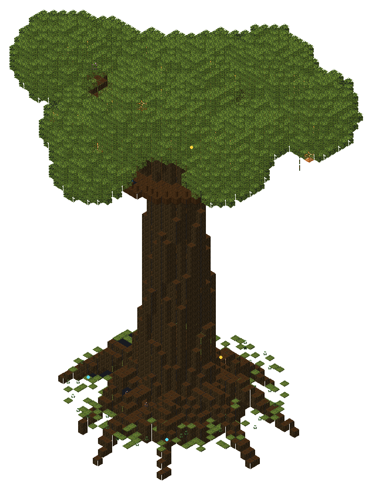
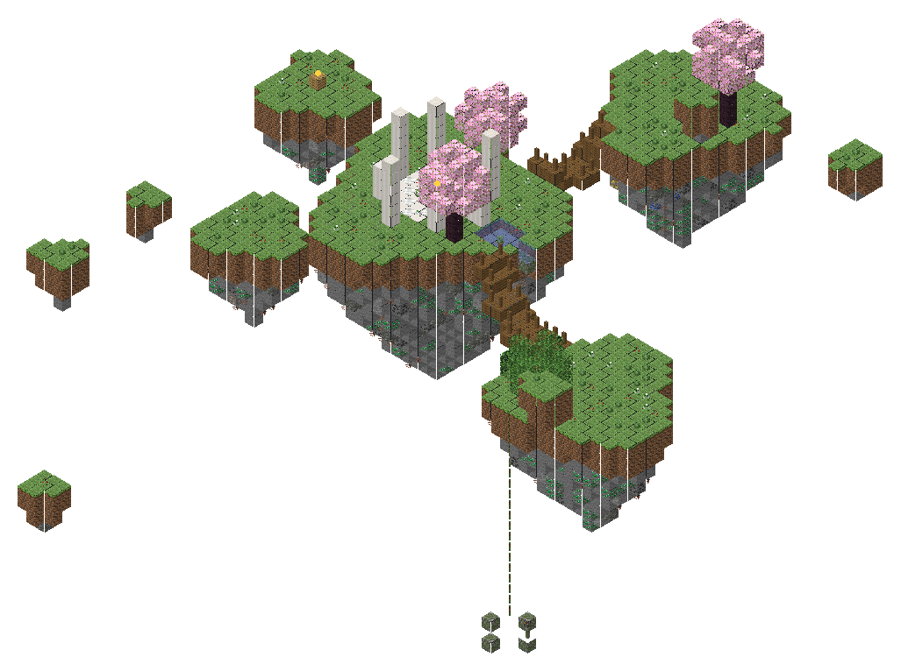
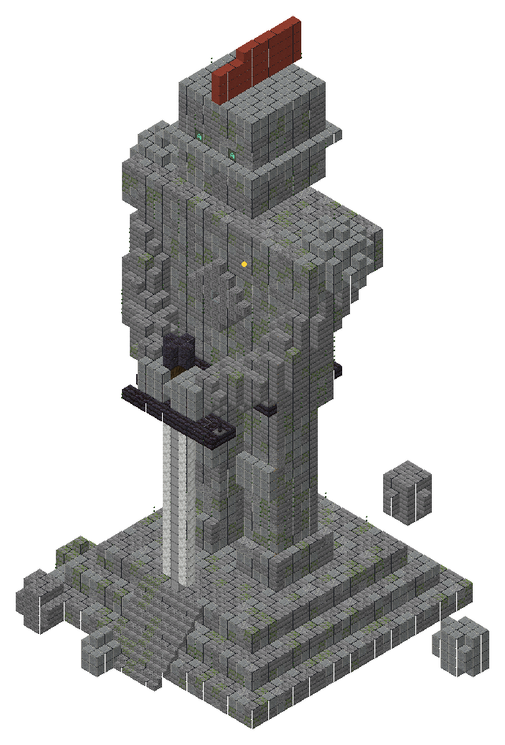
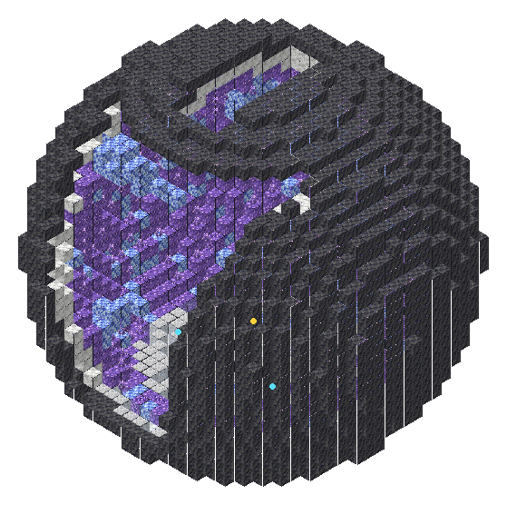
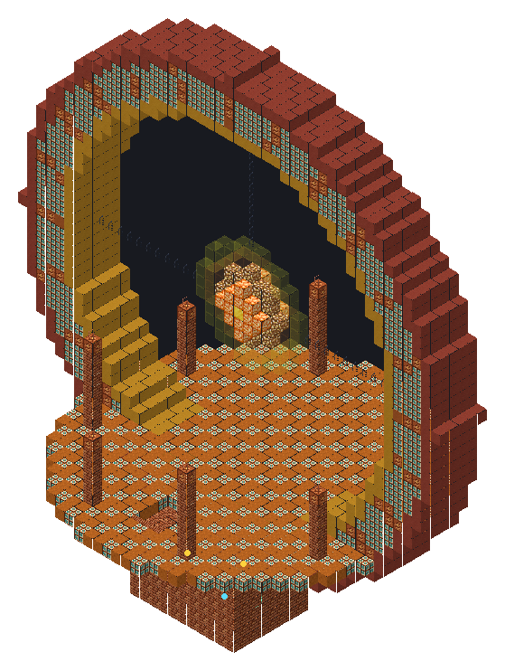
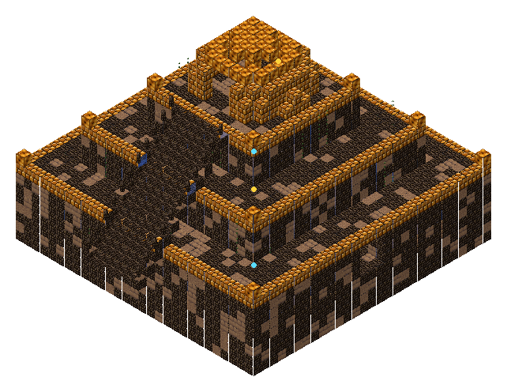
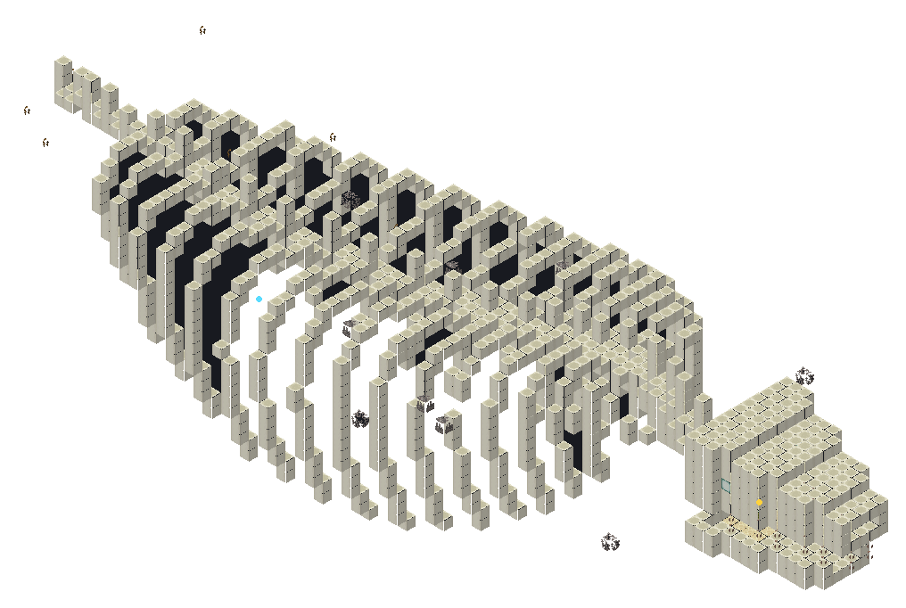
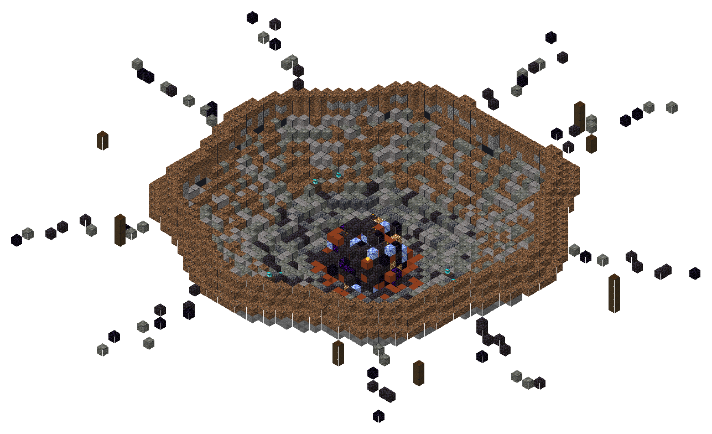
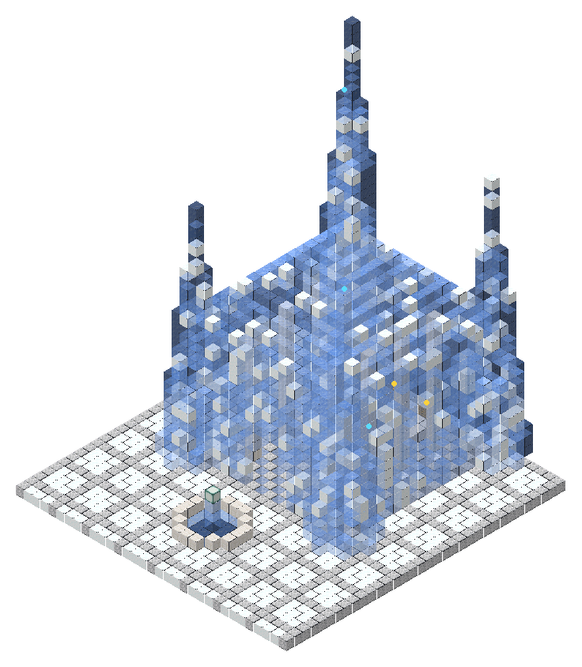
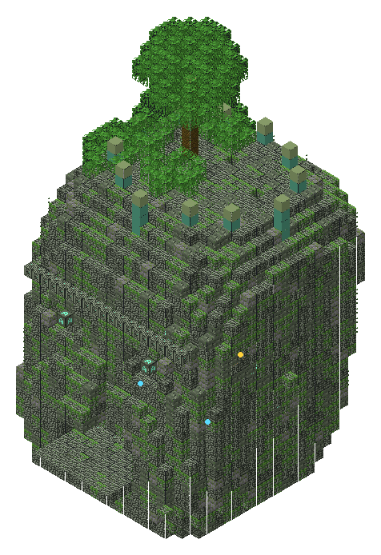

Dix merveilles
Les Merveilles
Dix lieux hors du commun, bien plus grands que les sites, visibles de loin. Il y en a au plus une par carré de 1 600 blocs (cinq cases sur cinq), jamais deux à moins de 640 blocs l'une de l'autre, et la merveille dépend du biome : une contrée fait presque toujours naître la sienne. La découvrir l'inscrit dans l'Atlas avec un grand titre, 12 fragments et un progrès ; son grand coffre contient toujours une page de la Chronique (souvent rare), 8 à 17 fragments, des diamants et un trésor qui lui est propre.
Aucun sceau d'invocation ne se trouve dans l'Overworld : ni dans les coffres, ni sur le Colosse, ni sur les autels. Les sceaux viennent de l'économie des invocations, de l'Astrelume et des boss des autres mondes. Les coffres des Contrées donnent aussi un tiers de fragments en moins qu'avant.


L'Arbre-Monde
forêts, Sylveun arbre de 60 blocs aux racines en arches ; un escalier dans le tronc creux monte à une salle et un balcon dans la couronne ; un second coffre entre les racines, au nord


Les Îles Célestes
plaines, prairies, savanes, cerisaiesdes îles de terre flottant à 50 blocs ; une corde de baies lumineuses descend jusqu'au sol (cairn au pied) ; ponts de cordes, colonnes brisées, une source qui se jette dans le vide ; une cache sur l'île la plus lointaine (élytres possibles)


Le Géant de Pierre
Plaine des Colosses, plainesune statue de 55 blocs, les mains sur une épée plantée ; une échelle dans sa jambe droite (entrée entre les pieds) monte à une salle dans sa poitrine (cœur lourd possible)


La Géode Cathédrale
Cimes Prismatiques, picsune géode de 35 blocs fendue au sud, flèches de cristal prismatique, améthyste ; le trésor sur un piédestal, gardé par deux golems de cristal


L'Arche du Soleil
Canyons de Solbrûle, badlands, désertun anneau de pierre de 44 blocs, un soleil de pierre lumineuse suspendu dedans ; un escalier sur l'esplanade descend au caveau des prêtres (un scorpion y veille)


Le Temple d'Ambre
Marais d'Ambre, maraisun temple à degrés enlisé, un grand escalier jusqu'au dôme d'ambre ; par la porte est, la salle engloutie et ses rôdeurs des marais


Les Os du Léviathan
plages, côtesle squelette d'un serpent de mer de 80 blocs, côtes en arches ; le trésor dans le crâne, entre les mâchoires (cœur de la mer possible)


Le Cratère de l'Étoile
plaines, taïgas, déserts, neiges, forêtsun cratère de 45 blocs, des feux des âmes qui brûlent encore ; au fond, l'étoile : obsidienne, magma, cristal, un peu de débris antiques, et dans son cœur creux le trésor (à creuser)


Le Palais de Givre
Taïga des Mammouths, neigesune salle de glace bleue, cinq flèches, une cour et sa fontaine gelée ; un yéti garde le trône et les deux coffres derrière lui


La Tête des Anciens
Jungle des Anciens, junglesla tête d'une statue de 30 blocs, yeux de glyphes, couronne de cuivre vert ; la bouche est la porte d'une salle où nichent des raptors